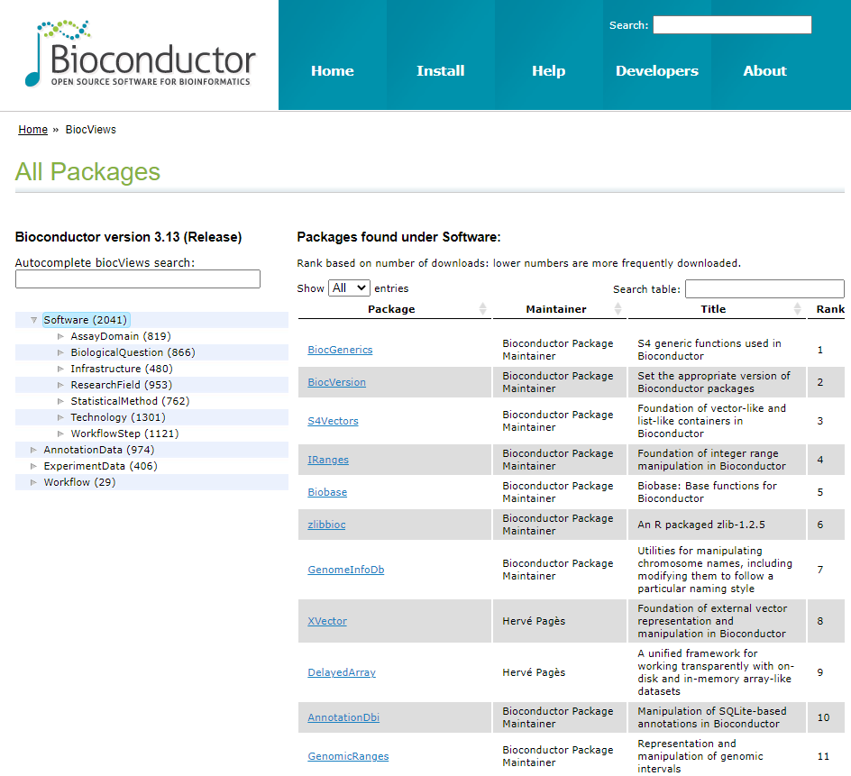

Chapter 6 Bioconductor
Bioconductor는 바이오인포메틱스를 위한 R기반의 데이터, 메소드, 그리고 패키지들의 모음입니다. 2002년 microarray 데이터 분석을 위한 플랫폼으로 시작되었으며 현재 2000개 이상의 패키지로 구성되어 있습니다. R은 분산형 오픈소스이나 Bioconductor는 Full-time developer들에 의해서 유지되고 있습니다. CRAN에 배포되지 않고 CRAN에 비해 더 많은 필수 자료들 (vignettes 등)이 필요하며 높은 수준으로 quality control이 되고 있습니다.
사용 가능한 패키지들은 이곳을 참고하시면 되겠습니다.

Bioconductor 코어 개발 그룹은 사용자들이 지놈스케일 데이터를 더 편리하게 다루룰 수 있도록 데이터의 구조를 개발하는데 많은 시간을 들입니다.
- 지놈스케일의 서열이나 발현등 대용량 유전자형 데이터 관리 및 통계적 분석을 위한 툴 제공
- 분자수준의 현상과 생장이나 질병 등 표현형수준의 관계를 규명하기 위한 정량 데이터 통합 및 관리
6.1 Packages
Use >> Software, Annotation, Experiment
- Software: 분석을 위한 툴 모음
- Annotation: 유전자 symbol/ID mapping, gene ontology 기반 유전자 분류, 유전체상에서 exon, transcript, gene 등의 위치, 단백질 기능 등
- Experiment data: 학습 가능할 정도의 Highly curated datasets (실험 데이터)
- Workflow: 특정 데이터 분석을 위한 프로세스 모음 RNA-seq, ChIP seq, copy number analysis, microarray methylation, classic expression analysis, flow cytometry 등

6.1.1 Installation
BiocManager를 먼저 설치하고 해당 패키지를 설치하시기 바랍니다. BiocManager에는 available()이라는 함수로 (특정 문자가 포함된) 사용 가능한 패키지를 검색할 수 도 있습니다.
Use >> Software >> IRanges
if (!requireNamespace("BiocManager", quietly = TRUE))
install.packages("BiocManager")
BiocManager::install("IRanges")
## .libPaths()6.2 Learning and support
각 패키지는 제목, 저자, 유지관리자, 설명, 참조, 설치법 등의 정보가 포함된 landing page가 있으며 패키지 내 함수들은 상세한 설명과 예제가 제공됩니다. 예를 들어 IRanges의 landing page를 참고하세요
vignettes는 bioconductor의 중요한 특징 중 하나로 R 코드와 함께 패키지를 사용하는 방법에 대한 상세한 설명을 제공하는 문서입니다.
library(IRanges)
vignette(package="IRanges")
browseVignettes("IRanges")
vignette("IRangesOverview", package="IRanges")
ir1 <- IRanges(start=1:10, width=10:1)
ir1
class(ir1)
methods(class="IRanges")
example(IRanges)
?IRanges
??IRangesLearn >> Support site 게시판에는 관련된 여러 QnA 들이 있어서 유사 문제에 대한 도움을 받을 수 있습니다.
6.3 Class, Object and Method
객체지향프로그래밍 (OOP)은 복잡한 문제를 프로그래밍할 때 발생되는 코드의 복잡성을 해결할 수 있는 하나의 방안으로 1990년대부터 많이 사용되었습니다.
R도 객체지향 프로그래밍 언어입니다. 그런데 R은 다른 언어들에 비해서 좀 어려운 (다른) 개념으로 사용됩니다. R에서 사용하는 Class에는 크게 base type, S3, S4, RC, 그리고 R6 등 다양한 타입이 있고 이 중 S3를 많이 사용해 왔으며 S3의 단점을 보완한 S4 형식의 class와 R6를 주로 사용합니다 [@AdvancedR]. 본 강의에서는 S3 형식의 class만 다루도록 하겠습니다.
클래스를 사용하는 이유는 여러가지가 있겠지만 복잡한 개념의 데이터를 구조화하고 쉽게 관리하기 위해서 사용한다고 보면 될 것 같습니다. 여러분이 알아야할 개념은 Class와 Object 그리고 Method 입니다. 사실 R의 모든것이 Object이고 이러한 Object들의 정의가 Class 입니다.
df <- data.frame(x=c(1:5), y=LETTERS[1:5])
df
class(df)위에서 df는 변수라고 부르지만 object이기도 합니다. df의 class는 data.frame 입니다. 클래스는 누구든 원하는 만큼 얼마든지 만들 수 있습니다.
class(df) <- "myclass"
class(df)그런데 모든 object들이 OOP 유래는 아닙니다 base object들이 그 예입니다.
x <- 1:10
class(x)
attr(x, "class")
mtcars
attr(mtcars, "class")method는 위와 같은 클래스들에 특화된 어떤 기능을 하는 함수라고 생각하시면 됩니다.
mt <- matrix(1:9, 3,3)
df <- data.frame(1:3, 4:6, 7:9)
class(mt)
class(df)
str(mt)
str(df)
diamonds <- ggplot2::diamonds
summary(diamonds$carat)
summary(diamonds$cut)
methods(class="data.frame")위 summary, str 등이 generic function이라 불리는 method들 입니다. class마다 사용 가능한 method가 어떠한 정보가 있는지 알기 위해서 methods()라는 함수를 사용합니다.
6.4 Bioconductor의 OOP
bioconductor에서 다루는 genome 스케일의 experiment나 annotation은 대표적인 복잡한 데이터 중 하나 입니다. Bioconductor에서 OOP 개념은 다음과 같습니다.
class - 복잡한 생물학적 데이터 구조의 틀 정의
object - 특정 클래스가 특정 구현된 실체
method - 특정 클래스에 대한 기능 수행
예를 들어 객체 Homo.sapience를 살펴보면 다음과 같습니다.
if (!requireNamespace("BiocManager", quietly = TRUE))
install.packages("BiocManager")
BiocManager::install("Homo.sapiens")
library(Homo.sapiens)
class(Homo.sapiens)
?OrganismDbThe OrganismDb class is a container for storing knowledge about existing Annotation packages and the relationships between these resources.
methods(class=class(Homo.sapiens))
genes(Homo.sapiens)[1:10]
exons(Homo.sapiens)[1:10]
homo_seq <- seqinfo(Homo.sapiens)
class(homo_seq)
?seqinfoA Seqinfo object is a table-like object that contains basic information about a set of genomic sequences. …
length(homo_seq)
seqnames(homo_seq)bioconductor에는 대용량 정보가 object 형태로 구조화되어 저장되어 있으며 library()함수로 읽어올 수 있고 다양한 함수로 해당 object의 정보를 읽어올 수 있습니다.
6.4.1 Exercise
https://adv-r.hadley.nz/s3.html

이 저작물은 크리에이티브 커먼즈 저작자표시-비영리-변경금지 4.0 국제 라이선스에 따라 이용할 수 있습니다.